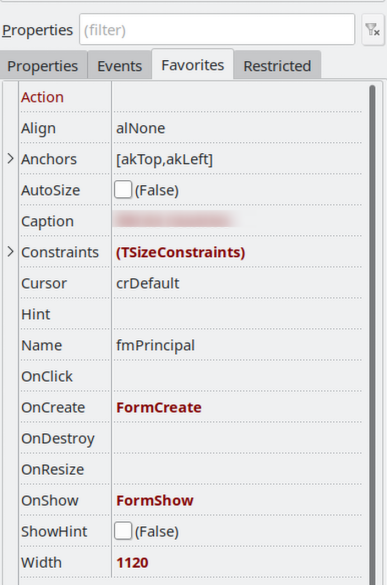

Introdução
O Object Inspector do Lazarus exibe todas as propriedades e eventos de um componente. Com o tempo, você percebe que sempre acessa as mesmas propriedades (como Name, Caption, Enabled, Visible, etc.), mas elas ficam "perdidas" entre dezenas de outras opções.
A funcionalidade de favoritar propriedades permite que você marque as propriedades e métodos mais usados, fazendo com que elas apareçam no topo do Object Inspector, facilitando o acesso rápido.
Como Favoritar Propriedades
Para favoritar uma propriedade ou método no Object Inspector:
- Selecione um componente no formulário ou no Object Inspector.
- No Object Inspector, localize a propriedade ou método que deseja favoritar.
- Clique com o botão direito do mouse sobre a propriedade ou método.
- No menu de contexto, selecione "Add to Favorites" ou "Adicionar aos Favoritos" (dependendo do idioma da IDE).
Após favoritar, você verá um ícone de estrela (★) ao lado da propriedade, e ela será movida para a seção "Favorites" no topo do Object Inspector:
Visualizando Propriedades Favoritadas
As propriedades favoritadas aparecem em uma seção separada no topo do Object Inspector, acima das propriedades normais. Isso permite acesso rápido às propriedades mais usadas sem precisar rolar a lista.
Você pode favoritar propriedades de diferentes tipos de componentes. Por exemplo, para componentes visuais, você pode favoritar Name, Caption, Left, Top, Width, Height, Enabled, Visible, etc.
Removendo dos Favoritos
Para remover uma propriedade dos favoritos:
- Clique com o botão direito sobre a propriedade favoritada (que tem o ícone de estrela).
- Selecione "Remove from Favorites" ou "Remover dos Favoritos".
Fazendo Backup dos Favoritos
Os favoritos do Object Inspector são salvos no arquivo objectinspectorfavorites.xml, localizado na pasta de configuração do Lazarus. Fazer backup desse arquivo permite restaurar seus favoritos após reinstalar a IDE ou migrar para outro computador.
Localização do Arquivo
O arquivo objectinspectorfavorites.xml fica na pasta de perfil de configuração do Lazarus:
- Windows: Geralmente em
%APPDATA%\Lazarusou na pasta de instalação do Lazarus. - Linux: Geralmente em
~/.lazarusou na pasta de configuração do Lazarus.
Importante: Se você usa o fpcupdeluxe para gerenciar suas instalações do Lazarus, o arquivo provavelmente está em:
~/fpcupdeluxe/lazarus/config_lazarus/objectinspectorfavorites.xmlOu, dependendo da configuração do Lazarus:
~/.lazarus/objectinspectorfavorites.xmlComo Fazer o Backup
Para fazer backup dos seus favoritos, simplesmente copie o arquivo objectinspectorfavorites.xml para um local seguro (pasta de backup, nuvem, etc.).
Exemplo no Linux:
# Se usar fpcupdeluxe
cp ~/fpcupdeluxe/lazarus/config_lazarus/objectinspectorfavorites.xml ~/backup/
# Ou se usar instalação padrão
cp ~/.lazarus/objectinspectorfavorites.xml ~/backup/Exemplo no Windows:
# Copiar para pasta de backup
copy "%APPDATA%\Lazarus\objectinspectorfavorites.xml" "C:\Backup\Lazarus\"Restaurando o Backup
Para restaurar seus favoritos, simplesmente copie o arquivo de backup de volta para a pasta de configuração do Lazarus (substituindo o arquivo existente, se houver). Certifique-se de que o Lazarus esteja fechado antes de fazer a substituição.
Dicas de Produtividade
- Favorite propriedades comuns: Para componentes visuais, considere favoritar
Name,Caption,Enabled,Visible,Font,Color, etc. - Favorite eventos frequentemente usados: Como
OnClick,OnChange,OnKeyPress, etc. - Mantenha backups regulares: Se você personalizou muitos favoritos, faça backup do arquivo periodicamente.
- Compartilhe com a equipe: Se trabalha em equipe, você pode compartilhar o arquivo
objectinspectorfavorites.xmlpara padronizar os favoritos entre os desenvolvedores.
Conclusão
A funcionalidade de favoritar propriedades no Object Inspector do Lazarus é uma excelente forma de personalizar a IDE e aumentar a produtividade. Ao marcar as propriedades mais usadas, você reduz o tempo gasto procurando por elas na lista. Lembre-se de fazer backup do arquivo objectinspectorfavorites.xml para preservar suas configurações, especialmente se você usa o fpcupdeluxe, onde o arquivo geralmente está em ~/fpcupdeluxe/lazarus/config_lazarus/.